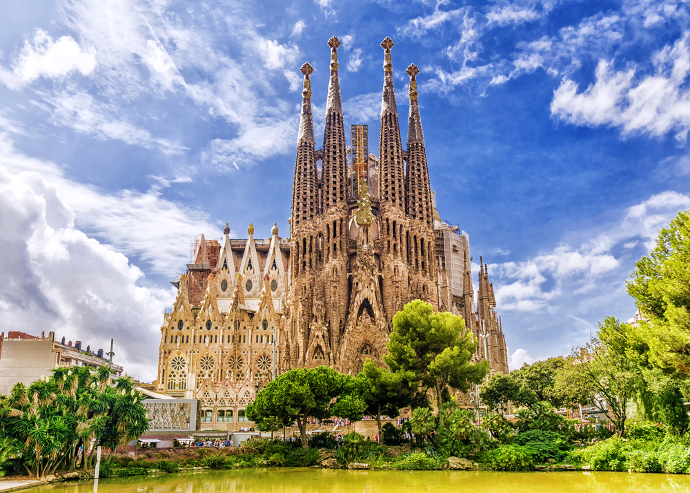
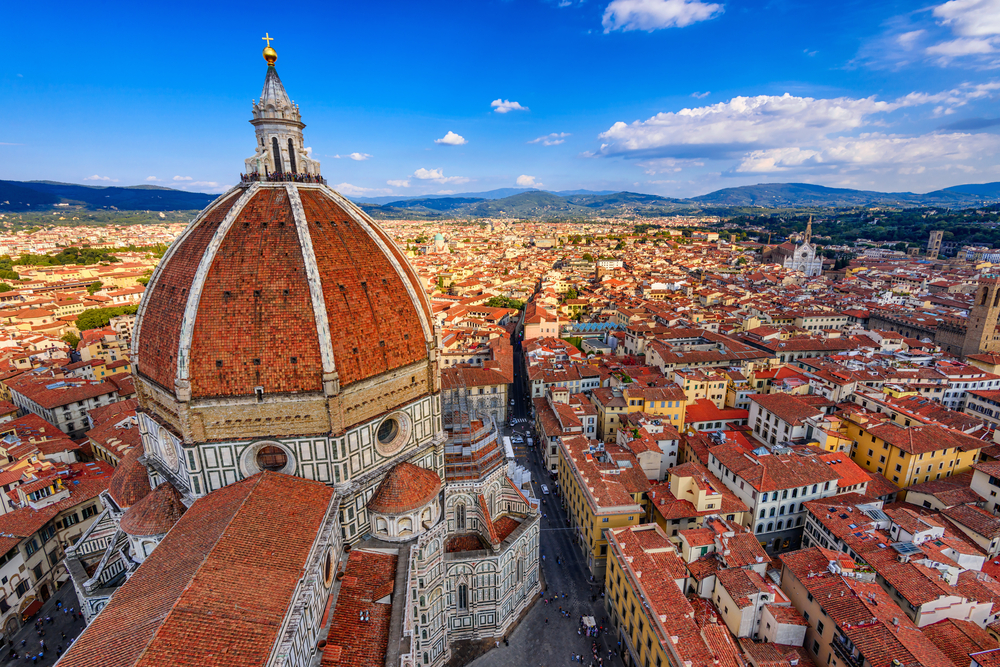

Ostentando uma atmosfera do século 17, casas com grandes janelas e bicicletas pelas ruas,
é difícil não gostar de Amsterdã. Aberta a todos os perfis de viajantes, a capital holandesa
é o destino mais procurado do país. Para começar com o pé direito, conheça a Praça Dam, o coração
cidade, onde ficam o Palácio Real, o Monumento Nacional, bares, restaurantes, lojas de souvenires
uma unidade do Museu de Cera Madame Tussauds. Vale visitar também alguns de seus 44 museus, bem como
o Parque Keukenhof, sobretudo se a viagem for durante a primavera, entre março e maio. À noite, a dica
é dar um pulinho no Red Light District, polo de entretenimento voltado principalmente a adultos e que
reúne pubs, cafés e restaurantes.
Além de ter a arte e a arquitetura como pontos fortes, some a isso a tradição espanhola, belas praias e
deliciosa. Em outras palavras, Barcelona tem motivos de sobra para ser o endereço das suas próximas férias.
Com inúmeras atrações, a cidade manja tudo quando se trata de tirar o fôlego dos visitantes. Afinal de contas,
é a casa da Basílica da Sagrada Família, da Avenida La Rambla e de outras obras-primas idealizadas pelo célebre
Antoni Gaudí, como, por exemplo, o Parc Güell e as casas Batlló e Milà.
Um dos berços do Renascimento na Itália e a mais importante expressão artística do país, Firenze, como é chamada
nativos, é praticamente um museu a céu aberto. A cidade abriga o Duomo di Firenze, ou Catedral de Santa Maria del Fiore,
que começou a ser construída no final do século 13. Hoje, figura entre as cinco maiores igrejas da Europa e descortina
uma bela vista da região. Portanto, câmeras a postos!